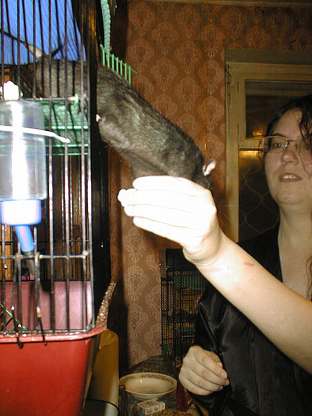
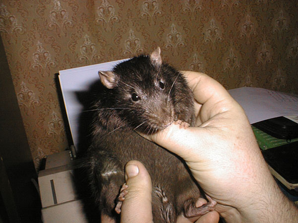
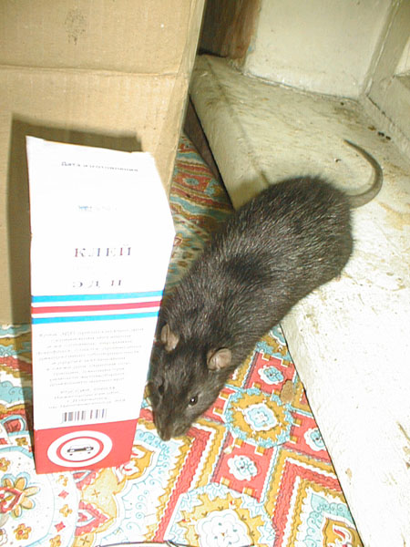
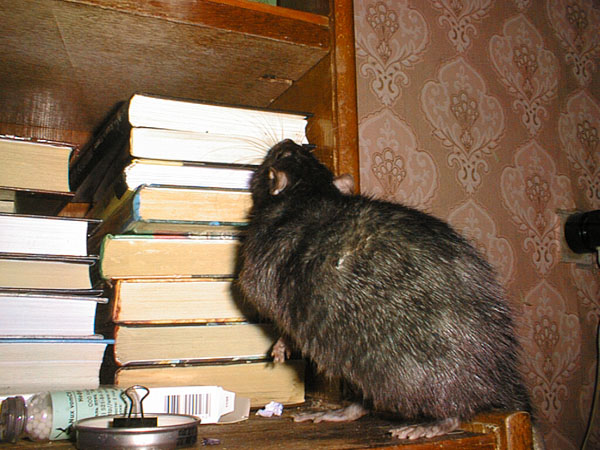
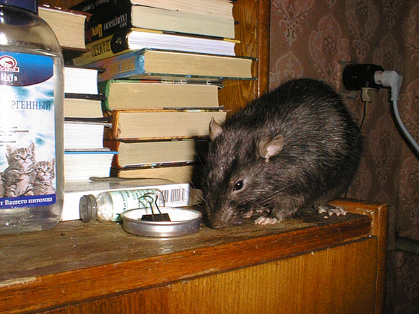
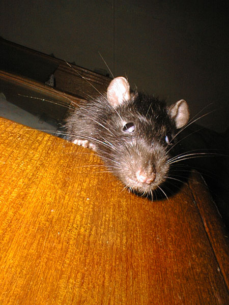

Джет Сильвер
Февраль 2005

— "Обводить взглядом владенья свои" — это так делается? Или их надо дозором обходить? Плохо помню...

— А что там вкусного готовят?

— Выхожу...

— Не, я, конечно, и руку могу пожать, но лучше палец подавать...
Март 2005

Фото сделано после того, как этот свинтус слямзил у Наташи из тарелки кусок мяса, обляпал ее всю кетчупом, а мясо заныкал за шкаф. Обратите внимание — ни капли смущения на усатой морде!
11 апреля 2005

—Я тоже могу есть из тарелки!

— Да, вот такой я длинный и изящный...

— А вот такой — короткий и широкий...

— Чего бы почитать?

— Вы меня смущаете...

— Чем полка пахнет? Никак не пойму...

— Есть "кругом"!

— Что-то я перепил — глаза не фокусируются...